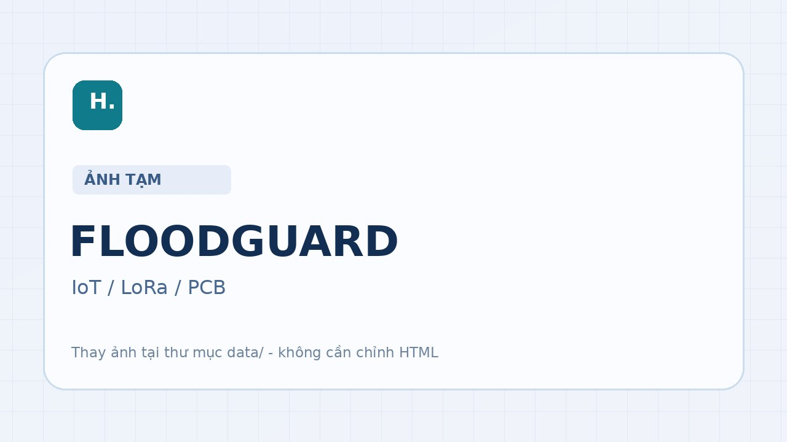

01 / Overview
Giới thiệu dự án
Dự án tập trung vào thu thập dữ liệu từ các nút thiết bị, truyền thông không dây LoRa và hỗ trợ giám sát/cảnh báo từ xa.
Phần này sẽ được mở rộng với mục tiêu, phạm vi và bài toán kỹ thuật cụ thể.
Hệ thống giám sát và cảnh báo lũ sớm
Hệ thống cảnh báo lũ sớm qua LoRa, với mạch PCB tự thiết kế và định hướng đồng bộ dữ liệu lên Cloud.
Dự án tập trung vào thu thập dữ liệu từ các nút thiết bị, truyền thông không dây LoRa và hỗ trợ giám sát/cảnh báo từ xa.
Phần này sẽ được mở rộng với mục tiêu, phạm vi và bài toán kỹ thuật cụ thể.
Hình ảnh và video minh chứng cho dự án; các tư liệu thực tế sẽ được cập nhật cùng tiến độ hoàn thiện.

Video demo dự án FLOODGUARD
Trở lại portfolio để xem dự án UAV, kỹ năng và thông tin ứng tuyển.